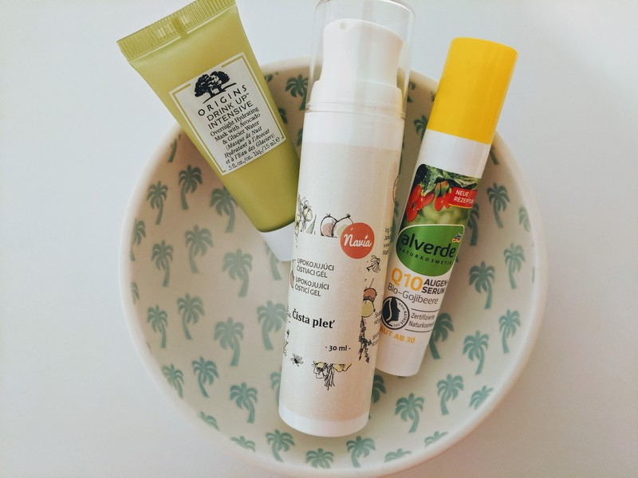
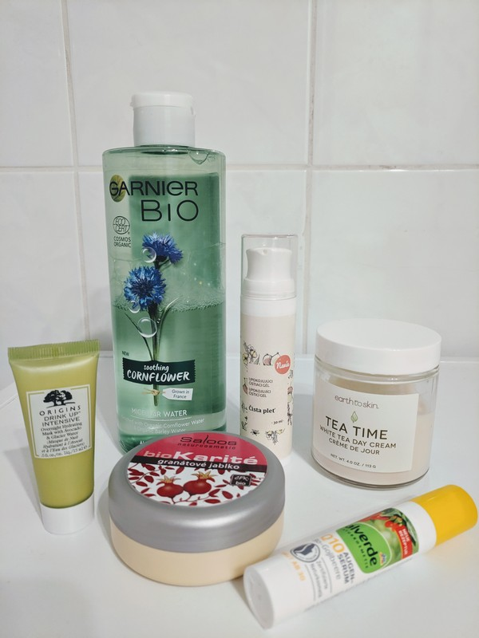

Dostala jsem chuť po nekonečné době trochu vzkřísit rubriku DROGa. Dobře vím, že tu měla své věrné fanoušky :D! Ten nadpis berte trochu s rezervou, ale co si budem - po dětech a desítkách bezesných nocí nikdo z nás neomládne 8-)
S mateřstvím se v naší koupelně změnilo mnohé. Krom zámečků na skříních (které si to naše hádě už stejně umí otevřít) je tou největší změnou asi to, že mnohem víc přemýšlím nad složením kosmetiky a pokud to jde, snažím se volit raději přírodní cestu. A z nedostatku času už samozřejmě také používám jen to opravdu nejnutnější, takže mám doma produktů míň a míň. V dnešním článku bych vám ráda představila své aktuální oblíbence na poli pleťové kosmetiky.

Upokojující čisticí gel “Čistá pleť”, Navia
Slovenskou značku Navia jsem až donedávna vůbec neznala. Pak jsem ale na svých kočárkových procházkách objevila obchůdek Přírodno a od té doby už jsem tam utratila pěkný kus mateřské :-D Na mou obranu - povětšinou jsem nakupovala dárky. Pak jsem si ale řekla, že bych taky ráda něco otestovala a volba padla právě na tento čisticí gel pro citlivou/suchou pleť. Jedná se o čirý, 100% přírodní gel, který se na navlhčené pleti mění v bílou emulzi. Gel je na olejové bázi a můžu na vlastní kůži potvrdit, že pleť nevysušuje - naopak na pleti zanechává lehký ochranný film. A ta jemná bylinková vůně? Tu naprosto miluju a i díky ní se těším každý večer na tenhle malý čisticí rituál <3
Micelární voda s organickou vodou z chrpy a organickou vodou z ječmene, Garnier BIO
Protože poměrně často někam cestujeme, micelárka je takový můj věrný spolucestující, který nezabere moc místa v kufru a odlíčí všechno, co potřebuju. Teď aktuálně používám tuto od Garnier, která by měla vyhovovat všem typům pleti včetně citlivé. Mně osobně vyhovuje i na oční okolí, i když malinko vysušuje. Jediné, co mi tak úplně nesedí, je lehce nasládlá parfemace, byť se výrobce na obale prsí, že “svěží aromatická vůně je 100% přírodního původu”. Nu, nevím, ale když to porovnám s výše zmíněnou Navií, úplně se mi to nechce věřit. To už ale asi ponechám na vkusu každého z vás :-)
Noční pleťová maska Drink Up Intensive, Origins
Cestovní sadu několika pleťových masek od Origins jsem dostala k Vánocům od bráchy a Jennifer a byť jsem tuto značku z doslechu znala, zatím jsem neměla příležitost nic vyzkoušet, takže jsem byla z dárku upřímně nadšená. Slogan " Mask and Go" na krabičce jsem pobaveně glosovala, že “to je přesně něco, co matka na mateřské potřebuje” 8-) Zatím jsem si nejvíc oblíbila právě tuto masku Drink Up, protože se nemusí hned smývat, ale necháte ji působit hezky přes noc. Maska by měla pleť intenzivně vyživit a hloubkově hydratovat, navíc moc hezky ovocně voní. Já osobně ten efekt na pleti i celkem vidím a jednou za týden se ráda takhle rozmazlím a zahrnu masku do své večerní pečující rutiny.
Denní krém Tea Time, Earth to Skin
Když Péťa cestuje na služební cestu někam do zahraničí a ptá se mě, co mi má dovézt, vždycky skromně říkám, že nic - jen nějakou místní kosmetiku :D Tak se v mé koupelně objevil tento pleťový krém a já si ho okamžitě oblíbila. Má lehkou, jakoby našlehanou texturu a byť na pleti zprvu zanechává “mokrý” efekt, velice rychle se vstřebá a výborně hydratuje. Je skvělý i jako podklad pod make-up a jako bonus příjemně voní.
Oční krém s plody goji, Alverde
Oční okolí je podle mě oblast, kde se mateřství podepíše nejznatelněji - ty chybějící hodiny spánku prostě už člověk nedožene a já osobně jsem v těchto partiích “zestárla” asi nejvíc. Naštěstí se o oblast kolem očí starám a oční krém mi v koupelně už nějaký ten pátek nesmí chybět. Abych byla upřímná, zrovna s tímto kouskem tak úplně spokojená nejsem, respektive nevidím při používání žádný výsledek. Nelepí, nedráždí, ale z mého pohledu ani očnímu okolí nijak neprospívá. Krém je lehoulinký a doporučuje se pro ročníky 30+, nicméně já bych ho spíš viděla pro mladší generaci, která zatím vrásky kolem očí řeší jen preventivně. Moje suchá pleť rozhodně potřebuje něco hutnějšího a výživnějšího, takže já osobně už bych si tento kousek podruhé nekoupila. Složení je každopádně jako vždy u Alverde na jedničku.
Bio balzám granátové jablko, Saloos
Co se týče noční péče o pleť, už delší dobu jsem věrná české značce Saloos a jejich pleťovým olejům nebo teď aktuálně těmto víceúčelovým balzámům, které se dají použít jak na pleť, tak na celé tělo. Tento konkrétní obsahuje olej z granátového jablka a směsi éterických olejů v kombinaci s bio bambuckým máslem a přírodními vosky, které by měly zpomalovat proces přirozeného stárnutí pokožky, a tak je balzám přímo předurčen k péči o vrásky. Já jsem s ním velmi spokojená, pleť mám teď po probuzení opravdu mnohem vyživenější a hebčí. Jediné negativum je tužší konzistence balzámu - vždy je potřeba ho trochu rozehřát v ruce, aby se dal vpracovat do pleti - a nijak mě neokouzluje ani jeho vůně, ale to je čistě subjektivní.

Takhle tedy teď aktuálně vypadá můj malý arzenál péče o pleť aneb kosmetický minimalismus v praxi :-)